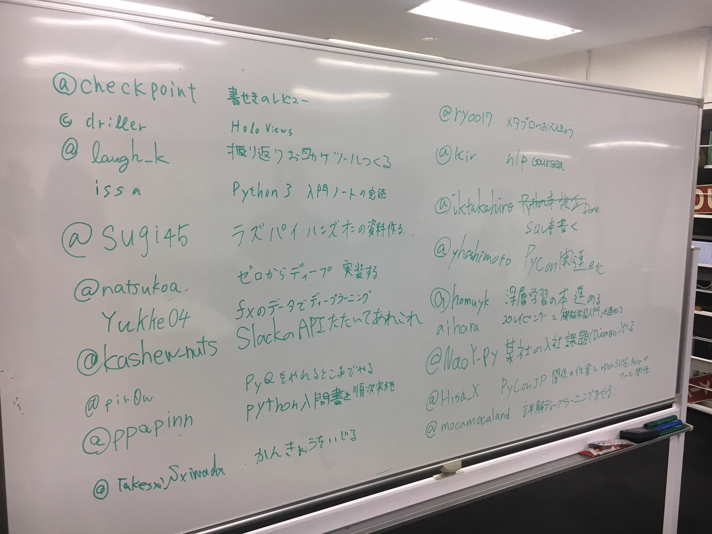

Pythonもくもく会に参加した #mokupy¶
ライフワークのクライミングで怪我をして以来、各種のもくもく会にいくようになっています。
当日やったことはこんな感じ。執筆多いな―。
経緯¶
当日は「Slackであれこれ」ということで集計スクリプトを作ってました。なんでかというと、
プロジェクトで出勤退勤をSlackにつぶいてる。
勤怠情報はGoogleスプレットシートにまとめる必要がある。
Slackでもつぶいて、Googleスプレットシートにも書くのダルい。
Slackでつぶいた出勤、退勤の時間を1月ごとにファイル出力できるようにしたい。 (そうすれば後はファイル編集も楽でいいよね)
ということでこれを期にPythonで作ろうとしたのですが、既にGolangで実装されてるバックアップツールはあったorz
ただ自分は特定の部屋につぶやいている、特定の投稿を習得したいだけだったので自分用に作りました。
もう一つ欲しい機能があって、取得した勤怠データを自動でGoogleスプレットシートに記載するようにしたらもっと楽かなと思ったのですが、転記する前には目で確認したかったのでやめときました。
既にそうゆうものがあったのですが、認証が通らず動かなかったりしたので、自分で使うやつでそう言うリスクを減らしたいというものあった。 Slack のログを自動で Google Spreadsheet に保存する
使い方¶
Slackのライブラリは os/slacker を使用。(作成したソースはプライベートリポジトリにしてます。)
Legacy tokens | Slack で自分が操作したいTeamのTokenを作成し、それを環境変数に渡してCLIで叩く感じです。
勘所・制限とか¶
一度に取得できるメッセージのmaxは1000(defaultで100)。→なので一度に一ヶ月分のデータを取りたかったが、1日分ずつ習得。
取得した結果より多くのメッセージがある場合、まだ「データあるよー」という値と、取得できたところまでのUnix timestampが帰ってくるらしいので、より無駄のないメッセージの習得をしたい。
時間の指定がUnix timestamp。→最初なんの数字かわからず混乱。お陰で日付・時刻操作用のPythonライブラリの学習になった。
雑談的な¶
お昼とか、合間に話したようなことをメモ。
PyQ っていういいPython向け学習サイトがあるらしいよ！
PyQやってるって人と、興味ある人がいたのでPyQ話してきた。
PCが壊れるときは突然だからバックアップとリカバリープランは作っとこう。
3年間使ってたMacBookが再起不能になった話を聞いた。(結構フル稼働してた上にHDDだったらしい。けどSSDでもそうゆう可能性はあるよね)
ヨドバシやAppleStore行っても店頭で手に入るのはメモリ8GBがMax。臨時対応で15万はつらい。←つらい…
「TimeMaschineがあったら過去に戻りたい」←たしかに。
.config,.ssh_config, 秘密鍵とか管理を忘れがち。あとクラウドに置いてるつもりで、データが大きくて放置していたやつとか。←数年前のやつとか取り返せない…あと最近ちょっと触って、ドットなんちゃらができてるのに気づいてなかったり忘れたりしてたやつもありました。(
.ansible.cfg,.jupyter,.ipython, あとVM上にあるかもしれないやつとか…)
数ファイルならVSCodeやAtomでも良いけど、プロジェクトのファイル触るならPyCharmいいですよ！
AtomでPython書いてる方で、「デバッグどうしてるんですか？」って聞いたら 「pdbで頑張ってます！」 とのこと。
仕事でもPython触れるようならPyCharm使えば、VM連携・リモートデバッグ・VCS連携とか楽ですよと言う話をしてきました。
他にはVSCodeがデバッグ機能がついてるし、リモート接続もできるのでいいらしいですね。(まあ僕はVimやPyCharm使ってるんですが…)